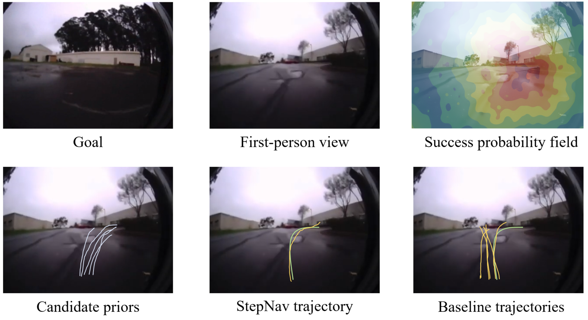
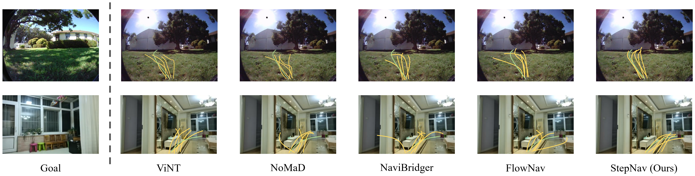

Abstract
We present StepNav, an efficient planning framework for visual navigation that generates reliable trajectories using structured trajectory priors. Unlike existing methods that rely on unstructured noise, StepNav leverages multi-modal trajectory initialization combined with conditional flow matching for efficient and safe path generation. Our approach incorporates a success probability field that predicts safe navigation regions and a dynamics-inspired feature projection module that enforces physical continuity in spatiotemporal features. Experiments demonstrate that StepNav achieves superior navigation performance while maintaining real-time efficiency suitable for autonomous systems.

Pipeline of StepNav: structured trajectory priors guide efficient trajectory generation.

Visualization of the success probability field predicting safe navigation regions.

Comparison of trajectory generation results with different methods.
Navigation Demonstrations
BibTeX
@inproceedings{luo2026stepnav,
title={StepNav: Efficient Planning with Structured Trajectory Priors},
author={Luo, Xubo and Wu, Aodi and Han, Haodong and Wan, Xue and Zhang, Wei and Shu, Leizheng and Wang, Ruisuo},
booktitle={IEEE International Conference on Robotics and Automation (ICRA)},
year={2026}
}